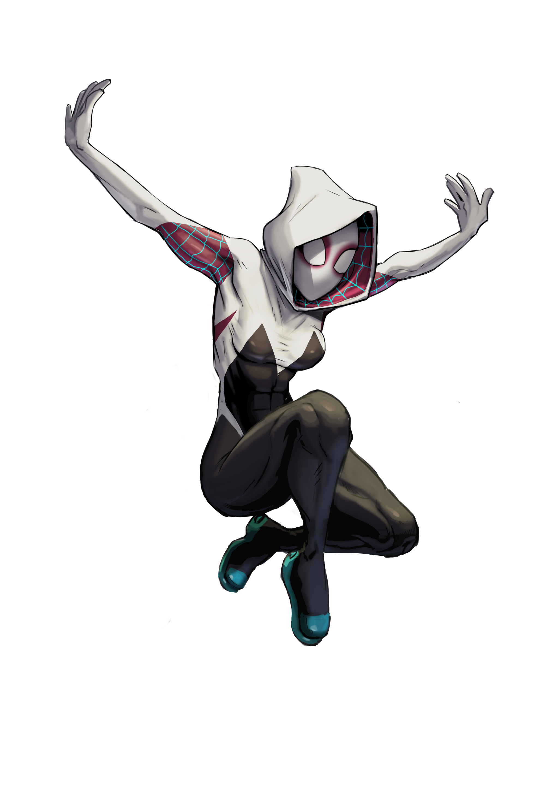
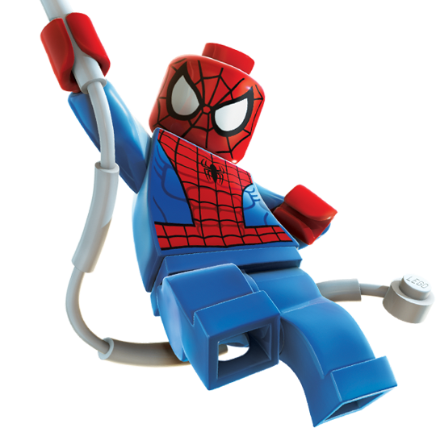

-
Miles-Morales #001
- Eletricidade
- Eletrico
Miles Gonzalo Morales é habitante da Terra-1610, onde se passa o universo Ultimate da Marvel. Sua história começa com o dia em que Normal Osborn foi preso pela S.H.I.E.L.D., o que permitiu que o Gatuno entrasse na empresa do vilão. Durante a invasão, uma aranha modificada com a formula OZ entrou na mochila do ladrão.
-
Homem-Aranha-2099 #002

- Veneno
- Garras
Como seu nome sugere, ele vem de um mundo futurista, que é distópico e cyberpunk. Ele trabalhava em uma organização chamada Alchemax, que cria programas genéticos. Seu objetivo é produzir super-humanos leais à sua empresa. Para resumir, ele é chantageado por seu chefe, Tyler Stone e acaba tendo seu DNA reescrito, recebendo poderes de Aranha.
-
Gwen #003
- Teia
- Reflexo
Mulher-Aranha (no original, Spider-Woman), popularmente conhecida como Gwen-Aranha (no original, Spider-Gwen) é o alter ego de Gwen Stacy da Terra-65, que assume a identidade de Mulher-Aranha depois de ter sido picada por uma aranha radioativa,[1] é uma personagem fictícia da Marvel Comics que apareceu pela primeira vez na história Edge of Spider-Verse #2 de setembro de 2014.
-
Homem-Aranha-superior #004

- Velocidade
- Intelecto
A série foi escrita por Dan Slott com arte de Ryan Stegman, Humberto Ramos, e Giuseppe Camuncoli. O enredo consiste em um reformado Otto Octavius que assumiu o corpo de Peter Parker.
-
Homem Aranha Punk #005

- Exercito
- Aracnidio
Essa versão do Homem-Aranha possui um visual bastante similar a sua contraparte original, porém usando uma jaqueta azul de mangas rasgadas e um tênis amarelo ao invés das clássicas botas vermelhas e azuis. Ele ainda possui espinhos nos ombros e na cabeça, remetendo ao visual punk do século 20.
-
Homem-Aranha De Ferro #006

- inteligencia
- Resistencia
Em Homem-Aranha: Sem Volta para Casa, Peter Parker precisa lidar com as consequências da revelação de sua identidade como o herói mais querido do mundo1234. Ele pede ajuda ao Doutor Estranho para que todos esqueçam sua verdadeira identidade, mas o feitiço não sai como planejado e vilões de outras versões de Homem-Aranha acabam indo para seu mundo
-
Carnificina #007

- Simbionte
- Regeneração
O nome do hospedeiro é Cletus Kassady. O jovem Cletus nasceu em 21 de Junho de 1984, ele não era um bom exemplo de juventude, sendo sempre cínico, cruel e sem bons sentimentos - em suma, um verdadeiro psicopata. Aparentemente Cletus sempre teve um relacionamento conturbado com seus pais. Em uma das ocasiões mais traumáticas de sua vida, Cletus, após ser flagrado torturando seu cachorro, foi atacado por sua mãe
-
Homem Aranha Lego #008
- Lego
- Teia
o famoso homen aranha qe conhecemos so qe em versao lego
-
Homem Aranha Scarlat #009
- Tipos De teia
- Reflexos
Aranha Escarlate é um dos heróis que foram criados apenas para encher o saco e paciência do Homem Aranha. Apareceu na série "E Se...?" como uma espécie de "irmão mais novo" ou Robin do homem aranha, a diferença era que esse Robin não era gay e sim mais másculo que o próprio Homem Aranha
-
Venon #010
- simbionte
- Regeneração
Eddie Brock é um jornalista que investiga o misterioso trabalho de um cientista suspeito de utilizar cobaias humanas em experimentos mortais. Quando entra em contato com um simbionte alienígena,